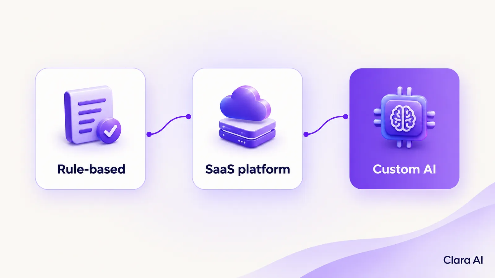
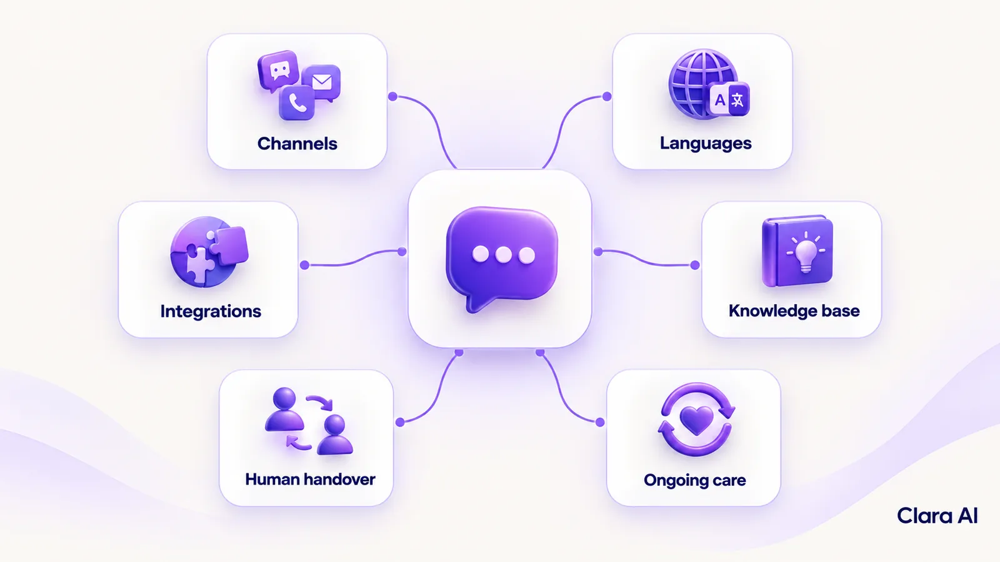
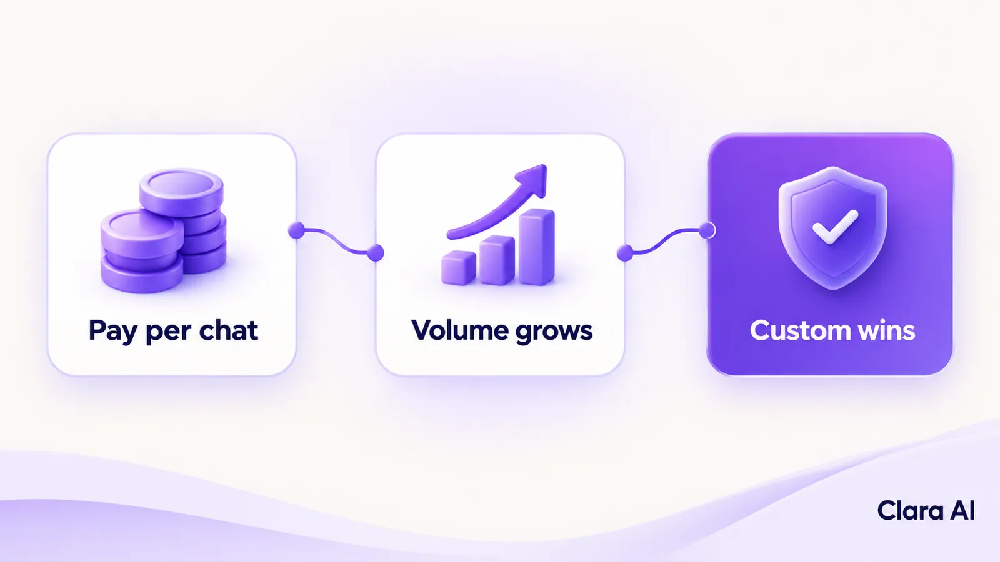

An AI chatbot in India costs from a few thousand rupees a month on a SaaS or WhatsApp platform to several lakh rupees one-time for a custom build trained on your own content and systems. The right figure depends on channels, languages, integrations, knowledge base, human handover and ongoing management, not on the chatbot label alone.
If you are holding three quotes that look nothing alike, that is normal. They are usually pricing three different things. This guide separates them, shows public market ranges with their sources, and explains how to compare quotes properly. It does not quote Clara AI prices. Clara AI scopes each build individually, after seeing your material.
Most quotes fall into one of three buckets.
Rule-based chatbots follow fixed menus and decision trees. They are cheap and predictable, but they struggle when a customer words a question differently from what the flow expects.
SaaS platforms are hosted tools, often built around WhatsApp. You pay a subscription, build flows yourself or with the vendor, and pay extra for usage and add-ons.
Custom AI chatbots are built on your own content (website pages, catalogue, policies, past conversations) and connected to your own systems such as a CRM, ERP, booking tool or payment flow. You pay for the build once, then for running and managing it. An AI web chatbot or a WhatsApp chatbot for business in this bucket answers from your material, not from a generic script.

| Rule-based | SaaS platform | Custom AI chatbot | |
|---|---|---|---|
| How it answers | Fixed flows and keywords | Flows, plus AI answers on higher tiers or add-ons | AI answers drawn from your own content |
| Cost model | One-time build, small running cost | Monthly or quarterly subscription plus usage | One-time build plus running and management costs |
| Public market range* | Build ₹35,000 to ₹1,25,000; running ₹600 to ₹2,000 a month | ₹1,500 to ₹16,999 a month, plus 18% GST | AI chatbot build ₹2,50,000 to ₹6,00,000; WhatsApp AI chatbot ₹2,00,000 to ₹5,50,000; running ₹5,000 to ₹40,000 a month |
| Handles rephrased questions | Poorly | Depends on plan | Yes |
| Connects to your CRM or ERP | Rarely | Limited to what the platform supports | Yes, scoped per system |
| Best for | A handful of fixed questions | Menus, bookings and order-status flows | Complex questions, large knowledge base, lead qualification |
| Main risk | Dead ends | Per-conversation fees at volume | Needs clean source material and good scoping |
*Ranges in the table are from this public cost guide, published by a development agency and updated in October 2026. Treat them as market indicators, not quotes. Another 2026 agency guide puts custom AI chatbots at roughly ₹3–8 lakh with ₹15,000–40,000 a month to run, and SaaS platforms at ₹2,500–30,000 a month plus ₹8–170 per resolved conversation. Prices change, so confirm with each vendor.
The Codingclave guide lists these published plans, all plus 18% GST:
For menus, buttons, bookings and order-status messages, this is often the cheapest honest route. If your bot does not need to compose answers from your documents, a flow platform may be all you need. AppWizards' guide puts configured platform chatbots in a similar monthly band of ₹2,500–30,000, before per-conversation fees, which is useful when you are comparing quotes that sit outside the named plan lists above.
The subscription is rarely the whole bill. On WhatsApp, Meta also charges per conversation. The same source cites about ₹0.86 per marketing message and ₹0.12 per utility message in India. Some platforms add a markup, charge for extra agent seats, or cap chatbot sessions per plan. Ask for the all-in monthly figure at your expected volume.
Codingclave puts custom builds anywhere from ₹35,000 to ₹8,00,000 one-time, depending on how intelligent the bot needs to be. Three bands matter most:
AppWizards' 2026 guide frames the custom band slightly higher: roughly ₹3–8 lakh to build a bot that answers from your own content, then ₹15,000–40,000 a month to run it. Both guides agree that the build is only half the story; hosting, model usage and content updates continue after launch.
On top of the build, Codingclave estimates hosting from about ₹600 a month for simple setups. Hosting and model usage grow with conversation volume, so a bot with thousands of chats a month costs more to run than one handling a few hundred.
Where a quote lands inside these bands comes down to what you ask the bot to do.
Six things move a quote the most.

1. Channels. A website chat widget or WhatsApp alone is the cheapest scope. Running the same bot on several channels adds work, because each channel behaves differently. Codingclave says covering many channels can roughly double a build.
2. Languages. Each language needs testing against real customer messages, not just translation. Clara AI's chatbots and calling agents work in English and Hindi. Say which languages your customers actually write in, and whether they mix them.
3. CRM and ERP integrations. A bot that only answers questions is simpler. A bot that creates leads, books appointments, checks order status or writes to your CRM needs each system connected and tested. Codingclave estimates ₹15,000 to ₹80,000 for each system.
4. Knowledge base. Twenty clean FAQs are easy. Thousands of pages of product details, policies and old support answers take careful preparation. Codingclave puts large knowledge bases at an extra ₹50,000 to ₹3,00,000. Messy or contradictory source material slows every build.
5. Human handover. Decide what happens when the bot cannot answer. A good handover passes the conversation to a person with context, so the customer does not repeat themselves. Without one, every edge case becomes a complaint.
6. Ongoing management. Products, prices and policies change, and customers ask new questions. Someone has to review conversations, update the content and fix gaps. This is the line most often missing from a cheap quote.
Calling agents and dashboards are separate budget lines. If you want an AI calling agent for inbound or outbound calls, or a dashboard to see conversations and leads, ask for each to be quoted separately rather than folded into the chatbot price. Codingclave puts production voice agents at roughly ₹40,000 to ₹1,00,000 a month, which shows how differently they price from a text chatbot.
This is where monthly bills surprise people. A flat subscription is easy to predict. A per-conversation fee scales with your success: the more customers talk to the bot, the more you pay.

The calculation is simple: monthly cost = number of AI conversations × fee per conversation. Codingclave gives two examples at published prices (converted at ₹85 to the dollar):
AppWizards makes the same point with a wider per-resolution band: major platforms at roughly ₹8–170 per resolved conversation on top of the subscription. A custom bot has running costs too, mainly hosting and AI model usage, but these do not typically rise at the same per-conversation rate.
Estimates of when custom wins vary across guides. Codingclave's rule of thumb is that below about 500 AI conversations a month a SaaS AI agent is still cheaper, and above about 1,500 a custom build tends to win within the first year. AppWizards places the crossover somewhere between 600 and 1,000 resolved conversations a month. A global 2026 build-vs-buy guide (in USD) puts the break-even higher still, around 5,000–10,000 resolutions a month over a multi-year horizon. Treat each figure as one agency's view and test it against your own volumes.
Build a three-year view before you decide: subscription or platform fees, per-conversation fees, Meta fees if you use WhatsApp, the one-time build, running costs and management.
The decision is less about the sticker price and more about how the bill behaves as volume and complexity grow. Use the checklist below against your own traffic, systems and content, then re-run the three-year maths with each vendor's fees.
Custom is usually the better value when:
SaaS is usually the better value when:
Clara AI builds custom AI chatbots for web and WhatsApp, trained on your own content and connected to your systems. Our chatbots and calling agents work in English and Hindi. The work sits in the custom bucket above: answers from your catalogue and policies, integrations scoped to your tools, and a handover path your team controls.
Clara AI delivers a first demo within 7 days of receiving your material, so you can judge the answers before you commit to a larger scope. Clara AI built a WhatsApp retail chatbot in India for KISNA Diamond & Gold, an example of the kind of customer-facing WhatsApp work a custom build suits.
This article does not quote Clara AI prices. Scope varies with channels, integrations and content, so a figure only makes sense after seeing your material. You can reach us through https://claraai.tech.
Ask every vendor the same questions:
If two quotes differ by a large amount, the answer is almost always in questions 1, 4 and 7.
The same three buckets apply. The source ranges above are Indian rupee figures for the Indian market, not a Gulf price list, so convert quotes into a single currency and compare like for like. Confirm whether platform fees and model usage are included, and which languages each bot supports. For Arabic-speaking markets, Clara AI's chatbots and calling agents also work in Arabic, alongside English and Hindi. A global USD guide can help you sanity-check overseas SaaS quotes, but always ask for an all-in monthly figure in the currency you will be billed.